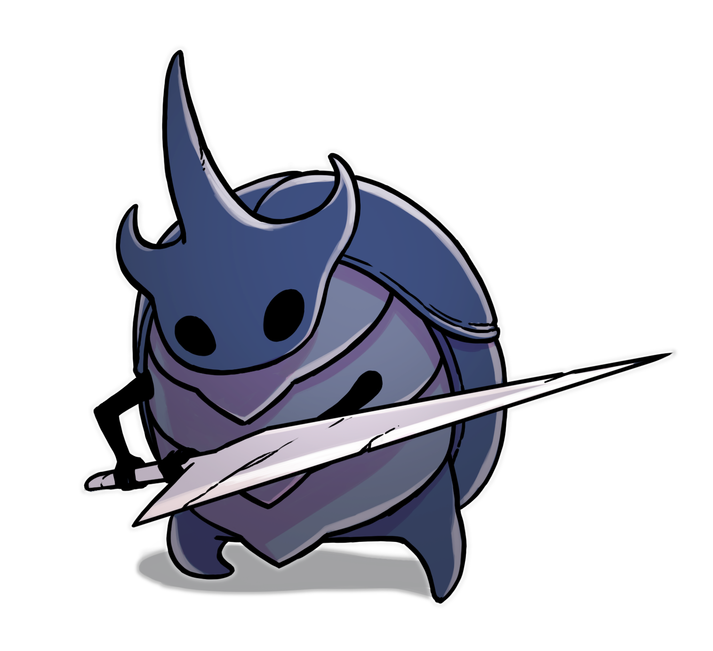
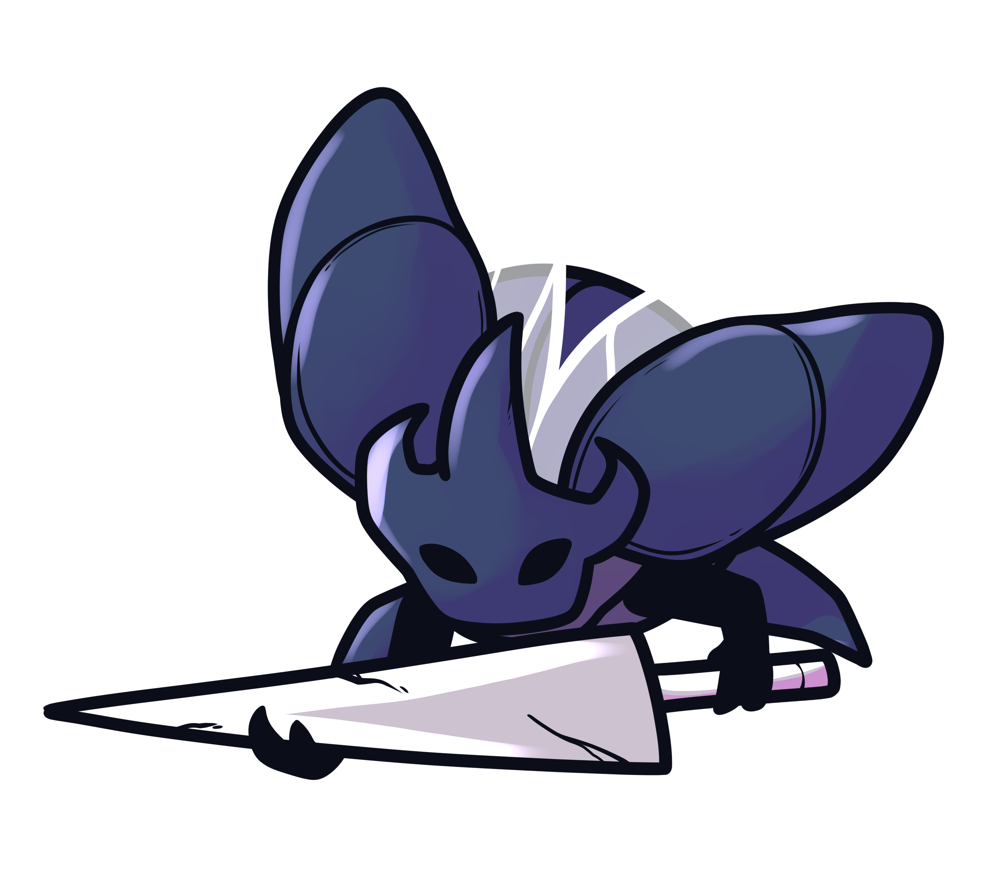

BASICS
Name: Mrkos
Age: Middle Aged (30s)
Pronouns: He/Him
–
- Gruff
- Compliant
- Paranoid
- Condescending
- Recluse

PERSONALITY
Mrkos takes a long time to warm up to. He's quick to anger, and quicker to brush off anyone who he doesn't know. He only shows respect to those who've earned it, though what it takes to earn his respect varies. He often shrugs you off until you've proven that you're capable, being dismissive at best and an asshole at worst, though he usually doesn't engage until someone provokes him. The only exception to this has been the Pale King, who he's... genuinely a little afraid of. A single bug, with that much power... If anyone asks him about it, he'll just say he's grateful he's never been to the White Palace.
Once Mrkos has decided to finally let his walls down around you, he'll still seem gruff and at times rude, but he'll do things like leaving gifts for you to find or making sure to buy your favorite food when he sees its on sale. He's never been good with words, and he prefers to show his affection by either handing out gifts or doing acts of service for you.


ABILITIES & SKILLS
Mrkos has been training with a nail since he was old enough to hold one. On his own, he's a fearsome fighter, but when he's working with the other Watcher Knights, he'd be confident in his success no matter the opponent, barring a God like the Pale King. The other Watcher Knights aren't the only other bugs he's trained with, having spent a significant amount of time training under both Hegemol and Ogrim, sharpening his skills with the nail under their watch. Though he has few other skills, his proficiency with the nail is more than enough for him.
Working under the Watcher, Lurien, it's only natural that Mrkos also follow in his steps and become an expert at simply observing the world around him. Putting clues together and forming a coherent story with them has been a skill that he's been honing for a long time, though whether he actually reveals the information he knows is another story.
BACKSTORY
Trigger Warnings: Death
Mrkos took after his father. He always did. That's what everyone told him. He looked liked his father, he acted like his father, he wanted to be his father. It didn't matter that he never met the man in the first place.
His father had been a captain of the City Guard, and so Mrkos would be one too. His father had done well in his formal education, as well as in combat training, and so it was Mrkos's duty to follow in his steps. He had to help his mother and his younger siblings. It never occurred to him to try to choose another path. He was content following in the steps of his father, even if his mother struggled to look at him without grief in her eyes.
"Your father died protecting the citizens of the city," Mrkos's mother whispered to him. He knew that she believed Mrkos would follow him in every step he took, including the ones that ended in his death.
Though he found joy in combat, he found little satisfaction in his duty of protection. His successes waned, and when Mrkos tried to become captain of the guard, he failed. For the first time, he hadn't managed to follow in his father's footsteps, and a seed of bitterness planted within him began to sprout.
It was difficult to provide for his mother and siblings, even as his younger sister began selling her artwork to assist him. She was a natural prodigy, of course, but it couldn't replace the paycheck that came with being a captain of the City Guard. When his father had lived, he had been considered a noble, due to both his high ranking and his paycheck, but Mrkos had failed in acquiring that same position. They had to move out of their house, into a smaller building with shitty neighbors and a worse neighborhood. With every reminder of his lost privilege, Mrkos's bitterness grew.
Then his mother died. She was getting older, but she hadn't quite reached the age that would have made it felt like it was just her time. Without his mother's paycheck to pay the bills, Mrkos had to downsize again in the interest of his two younger siblings. His sister wanted to go to art school, and his brother desperately wanted to join the Archives in Fog Canyon, and Mrkos couldn't afford either one, let alone both.
When someone offered him money to look the other way, he took it.
Just once, he told himself. Just to help afford the necessities. But then it happened again, and again, and then it was pretty clear that criminals were searching out Mrkos specifically to have him help them get away with their crimes.
And Mrkos... didn't care. What did the people of the city offer him for his protection? Not even a thanks, after hours standing guard in the rain. A shitty paycheck and no raise after years of service. A dead father and a dead mother, with two siblings that dreamed of better lives. It was Mrkos's duty to provide for his siblings, and he could care less about the rest of them.
A noble named Graedric had recently come under fire for treating his workers as disposable, and that meant Mrkos was raking in cash as he swept evidence under the rug. He didn't care much about any of it, at least not until he witnessed a mayfly cornered by one of the so-called "vigilantes" that despised Graedric. Without thinking, Mrkos stepped in, defending the common bug and completely unaware of his connection to the noble.
The mayfly introduced himself as Lurien, and Mrkos begrudgingly offered his own name in return. It was a brief meeting, and one he wouldn't think about much further, at least not for a long while.
When the knight Hegemol set his sights on Mrkos, the beetle did his best to avoid him whenever he could. Hegemol, however, was much faster than he seemed, considering his enormous size, and with the knight hovering over his shoulder, it was impossible for Mrkos to continue making the deals that he'd been taking in order to save for his siblings' educations. He would train Mrkos one-on-one, often leaving the beetle humiliated by the end of it, and then follow him around as if they'd known each other for years.
Mrkos hated it. He complained to his siblings about the knight that watched him like he was a newly-hatched larvae, and didn't think to stop himself before he revealed how he'd been making so much money despite his role as a simple guard, lamenting that Hegemol's presence now meant the end of his bribes.
His sister and brother were horrified by the new knowledge, and Mrkos barely had time to blink before both of them packed the little items they had and left their tiny apartment in the City of Tears, leaving their older brother behind.
The next time Hegemol asked him for a spar, Mrkos said no. He couldn't stay at his posts, frequently showed up late (if he showed at all), and cursed out anyone who looked at him the wrong way. And still, Hegemol remained, ignoring all attempts at shrugging him off (and quickly catching up the one time Mrkos tried to run).
When Hegemol got him alone and asked how he was doing, it was the first time Mrkos had shed a tear in years.
Not to say that he had a full breakdown. He was still a city guard, and he still had to be strong, even if he wasn't sure who he was still being strong for. His misery came out more like rage, and yet Hegemol didn't say a word as Mrkos let loose. He simply stood back and let the beetle vent his frustrations, even as he admitted to taking bribes in order to help his now-absent siblings. When he finally ran out of steam, Mrkos expected Hegemol to kick him out of the guard, or worse. He certainly deserved worse. Instead, Hegemol simply asked Mrkos why he didn't ask for help.
Mrkos was dumbstruck by the question. Ask for help? Ask for help? Ask who? Ask his dead father? Ask his struggling mother? Ask his siblings, who it was his job to protect? Ask the other guards? Ask him?
Yes, Hegemol said. Ask him.
For the next several minutes after that question, Mrkos and Hegemol sat in silence, with the great knight patiently waiting as Mrkos refused to look him in the eye. And then, softly, he asked Hegemol for help.
Hegemol was kinder than Mrkos deserved. Not only did he let Mrkos keep his job as a guard, he trained him to be better, and introduced him to Ogrim, another one of the great knights, who assisted in his training. Hegemol helped him earn the pay raise he'd been searching for, and over time he earned a promotion to captain as well. Hegemol was careful not to just give him what he wanted, but instead help him on the path to becoming someone who deserved it.
(Having one of the great knights vouch for him certainly didn't hurt.)
With his new position, Mrkos was often in direct contact with one of Graedric's more important workers, a mayfly named Lurien that Mrkos didn't connect to the same mayfly he'd saved months ago. Mrkos helped Lurien know more about the state of the city with his position as a captain, and with time their purely professional relationship slowly developed into mild acquaintance.
Mrkos helped Lurien with his job by providing information and helping him with the physical labor part of his job, and in turn Lurien helped Mrkos with the paperwork and scheduling that he dreaded. It was a mutually beneficial relationship, and with how much time they spent together, it was only natural for them to become friends.
Though Mrkos had been blissfully unaware, Lurien had recognized the beetle as his savior the second they exchanged names. It was only after months of working together that Lurien blurted out that crucial detail, though Mrkos barely reacted, to Lurien's exasperation.
(He was a city guard, he'd saved plenty of people. He was just glad Lurien recognized him for something good that he'd done, and not... everything else.)
When Lurien became the Watcher, he was quick to pick out Mrkos as one of his chosen knights. There was no small amount of pride that Mrkos felt in his accomplishment, though he had only Hegemol and Ogrim to share it with. Still, the great knights celebrated with him and for some time, Mrkos was happy to bask in the satisfaction he finally felt. He quickly bonded with the other Watcher Knights, and though he missed his siblings, he didn't search them out. Mrkos hoped that they would come back, but until then, he would make sure to become a better brother for them.
He made sure he deserved his position as a Watcher Knight, defending Lurien from those who wished him harm and, more often, from himself. It was no secret to Mrkos who "Neirul" was, though he kept the secret tight, instead suggesting ways Lurien could help fix the problems he saw in the city without needing to throw himself in front of every unsheathed blade he found. When he wasn't making sure Lurien wasn't bleeding out, Mrkos kept himself busy by helping those who couldn't help themselves. Often Lurien would find and give assignments to him, ways to brighten up the shady corners that had built their way in the city.
Then the infection hit.
It was hard to escape from that sickly orange haze, with the way it seemed to seep into every building and fog the minds of any who spent too much time in it. Then the Pale King approached Lurien to be a dreamer, and Mrkos knew that Lurien would say yes to anything the Pale King asked of him. He did not blame Lurien for saying yes, not with the way there was a certain desperation to the Pale King's features as he passed by Mrkos, but he mourned the eventual loss of another friend.
Lurien went to sleep, and Mrkos doubted he would ever wake up.
Ogrim left to guard the grove in the waterways, and Hegemol...
Hegemol vanished. One day here, the next gone.
There were only the other Watcher Knights left, guarding Lurien's tower. So Mrkos stayed with them, even as that bitterness returned. Alone once again, guarding a dead man that used to be his friend. There were still people going missing in the city, and those shadows seemed to creep back with Lurien's absence, but Mrkos remained stubbornly at his post, even as the orange haze grew thicker and thicker.
Even as his dreams changed and shifted.
Even as his fellow Watcher Knights began changing.
Even when he could feel his mind fading.
Relations
Lurien
Lurien is effectively Mrkos's boss, but they've known each other for too long for there to be much formality between them. Mrkos saved Lurien's life while he was still working for Graedric, though they never got to know each other until after Mrkos met Hegemol and became a captain of the guard. Mrkos finds Lurien's awkward and reclusive nature endearing, rather than frustrating, as he knows most people do. He also knows Lurien's "alter ego" of Neirul, and though Lurien lacks plenty of skill with the nail, he certainly has the drive to accomplish his goals. Ever since Lurien became a Dreamer, Mrkos has missed his presence dearly.
Watcher Knights
Mrkos respects his fellow Watcher Knights, and is familiar with every one. He respects their capabilities and is proud to fight alongside them, though there is not much more to it than that. They work together under Lurien, and they certainly work well together, but Mrkos has never been extraordinarily close with any of them. (Will be updated if any other Watcher Knights join.)
Parents
Though Mrkos never met his father, he aspired to be like him, which is what led him to become part of the city guard in the first place. His mother spoke of him fondly, and so that's how Mrkos remembered him. Though his mother was often swept up in her constant grief, the moments she wasn't were filled with care and affection for both him and his younger siblings. He hopes his parents would be proud of him if they saw where he was now.
Hegemol
When Mrkos first met Hegemol, he found the bug aggressively annoying, avoiding him at every chance he got. It was only through Hegemol's persistence and unwavering kindness that he managed to break through Mrkos's hard shell, seeing past the bad he'd done and focusing on the potential for good that he still had. Without Hegemol's help, Mrkos never would have been much more than a simple guard, helping him train and push past what he thought was his limit. Mrkos held no small amount of fondness for the great knight, up until the moment he vanished. Though Hegemol had fled the city due to his getting infected, Mrkos had no way of knowing what had happened, and he swiftly turned to anger at getting left behind. It's a grudge he'll take to his grave if he has to.
Chamomille & Reuben
For a long time, Mrkos only continued to work as a city guard in order to keep his younger sister Chamomille and brother Reuben safe and cared for. However, when they learned that he'd been accepting bribes, Chamomille found it unacceptable for him to have turned off his sense of morality, and she took their brother and what little things they had and left. Mrkos doesn't know where they've gone, but he hopes that if he stays in the city, eventually they will come back to him and find that he's a better brother than when they left.
Additional Info
I've talked with Lurien (@passerine404) and Hegemol (@asterics4355) extensively about their role in Mrkos's backstory to ensure everything lines up their characters.
Though Mrkos is currently the only Watcher Knight, if anybody else applies to be a Watcher Knight, I plan on working with them to ensure that the lore will work out, especially regarding why their appearances are all identical.
When Mrkos accepted bribes, they were often spaced fairly far apart between each other, and he was always careful not to accept any that would go too far or place any suspicion on him.
Chamomille and Reuben, his siblings, likely died to the infection. Or at least, I never plan on writing them. If anyone expresses any interest in roleplaying them, I would definitely be excited.